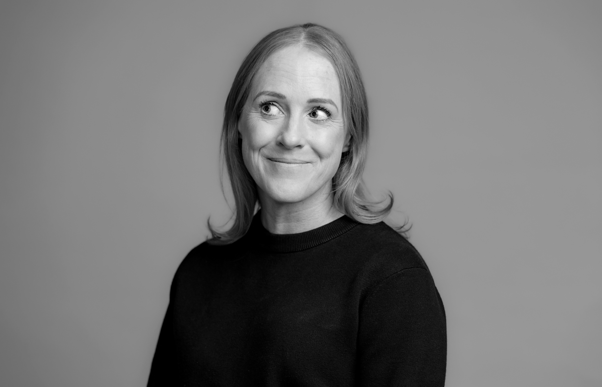

Neither is my background. Law, human rights investigations, humanitarian protection, health, philanthropy, social impact, strategy, org design — years contracting across worlds that rarely talk to each other.
Different worlds. Same human problems.
And here's what I've noticed: smart, successful adults often adult themselves into very small rooms.
Same sectors. Same circles. Same conversations. Same sensible inputs. Same intense sports. Big careers, but not always much buzz.
My career - life - never let me stay in one lane. The result? I see more. I spot patterns, connect people, ask different questions and bring ideas from places that don't usually collide.
Sharp thinker. High EQ. Strategic mind. Natural connector of people, ideas and possibilities. Bringer of mojo. Occasional disruptor of the mundane — yes, my AI pal said that, and I'm keeping it in.
Recess is my answer to the over-adulting and the silos. The right people. A little play. Unexpected magic. More extraordinary day-to-days.